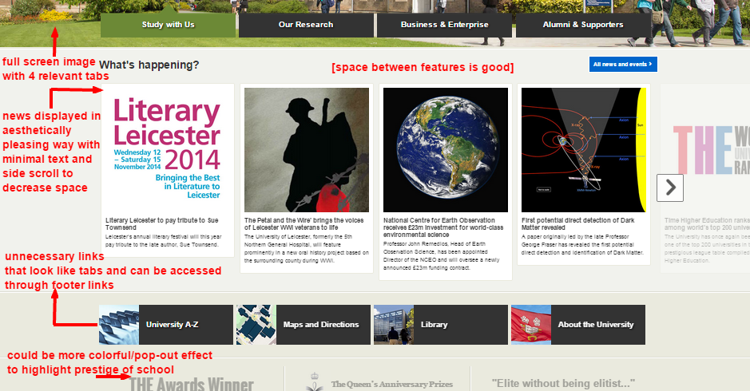

Aesthetic and minimalist design
Dialogues should not contain information which is irrelevant or rarely needed. Every extra unit of information in a dialogue competes with the relevant units of information and diminishes their relative visibility.
Home Page Aesthetics{kind=link}
The home page is successful in balancing text and displays in an aesthetically pleasing way. The user is presented first with a full screen image that side scrolls with the bottom bar navigation. The side scroll navigation of the news page similarly allows for the page to appear smaller while still presenting news stories. The extra tabs below may be redundant because they can be accessed through subsequent links located in the footer. Additionally, there could be improvement in utilizing color and space for the awards section at the bottom to highlight the prestige of the school for potential students.
Subsequent Pages Aesthetics{kind=link}
The university website for most other pages besides the home page does not balance text and displays successfully. The color palettes between the home page and other pages are extremely different throughout the entire website. For example, the news page has a black background while the about page has a blue background. While some pages display text efficiently like the home page, most pages have duplicate links and tabs that can be found in earlier pages, which can cause user errors and mistakes in navigating between pages. The text in pages like the staff page is cluttered and disorganized as shown above.